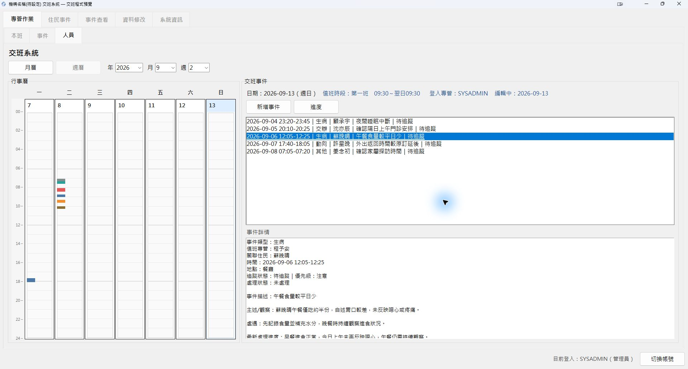
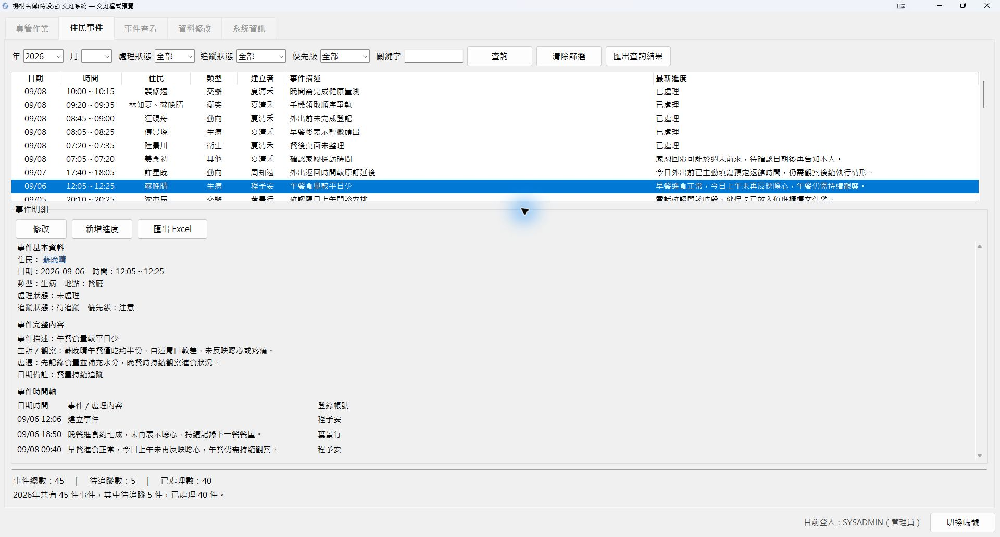
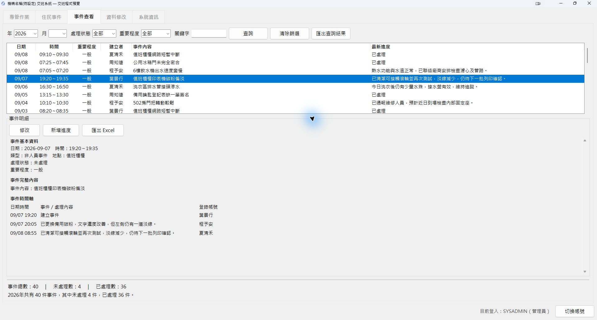

Product 01 · Work / Organisation
小型機構交班系統
把交班、事件與後續處理，整理在同一個地方。
為有固定值班與交班需求的小型住宿型單位設計，在自己的 Windows 電腦上記錄、查詢與追蹤日常工作。
01 / Start the shift
接班開始
接續每件日常
接班時先掌握待追蹤事項；工作中記錄新事件、追加後續處理；需要回看時，再依日期、狀態或關鍵字找回紀錄。
能將值班概要複製於剪貼簿方便轉貼及同步留存EXCEL檔案。

02 / Build the timeline
建立服務對象
事件時間軸
透過交班週曆建立服務對象的日常事件，選取事件即可回看觀察、處理方式與新增後續進度，逐步建立接續處理的時間脈絡。
{kind=link}

03 / Find the context
讓每個人員事件
皆有跡可尋
依日期、處理狀態、追蹤狀態、優先級或關鍵字查找人員事件。
選取事件後，可直接回看原始內容、觀察、處理方式與後續追加的進度，不必重新翻找不同班次的紀錄。
{kind=link}

04 / Keep work connected
換了班，
處理脈絡仍在
設備、環境與其他一般事項也能持續追加處理進度。每一次後續處理都附加在原事件中，方便不同班次了解事情目前進行到哪裡。
{kind=link}

05 / See the month
從一位服務對象出發，
回看整個月
服務對象月曆將事件放回日期中，搭配月份總件數與事件分類，方便查看一段時間內發生過哪些事情，也能切換月份回看歷史。

日常工作所需
交班
- 交班週曆與月曆
- 待追蹤事項
事件
- 住民事件
- 設備／環境等一般事項
- 跨班進度與狀態追蹤
查詢與留存
- 條件查詢與歷史回看
- 查詢結果／單一事件 Excel 匯出
基礎管理
- 人員與房床管理
- 工作人員與角色權限
- 版本允許的備份與還原
資料留在本機，
降低雲端曝露風險
核心資料與日常操作以本機為主，不需持續將工作資料傳送至雲端服務。即使沒有網路，也能持續進行交班、事件紀錄與查詢，降低因外部連線與雲端服務所增加的資料曝露風險。
電腦存取權限、備份及匯出檔案仍需由使用單位自行妥善管理。
使用環境
| 項目 | 目前狀態 |
|---|---|
| 平台 | Windows 桌面 |
| 操作方式 | 本機單機 |
| 網路 | 核心功能可離線操作 |
| 顯示基準 | 1600 × 900 |
| 最低顯示 | 1280 × 720 |
正式最低 Windows 版本、硬體規格與資料量上限仍在最終驗證中。
DEMO 與正式版狀態
正式版本
核心功能已完成，目前進行最終實機、安裝流程與人工驗收。
尚未正式發行Let's talk
想看看它是否適合你的機構？
如果你目前仍使用 Excel、紙本或通訊軟體整理交班，也可以告訴我現在的工作方式，一起看看這套工具是否適合。
LINE ID · linhigo301